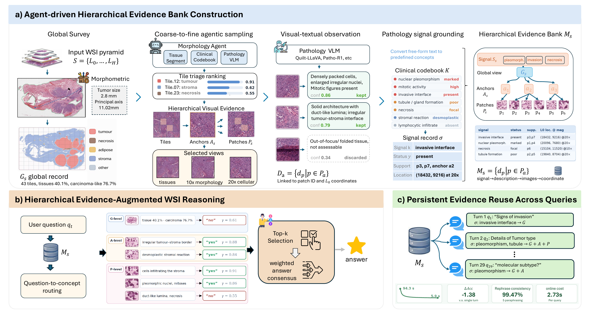

Build without a question
Coarse-to-fine exploration identifies informative regions and multi-scale patch views.
SlideBank: A Persistent Hierarchical Evidence Bank
for Consistent Whole-Slide Reasoning
Training-free exploration · Concept-indexed observations · Spatial provenance
FROM EXPLORATION TO REUSE
Explore once. Retain observations and their supporting views. Retrieve relevant evidence when a new question arrives.

Coarse-to-fine exploration identifies informative regions and multi-scale patch views.
Morphological observations and concept signals stay linked to patches and whole-slide coordinates.
Related questions can access the same slide-specific bank instead of restarting exploration.
INTERACTIVE EVIDENCE VIEWER
A real slide is ready to explore below. Select a region, then an anchor to inspect its patches, observations, and screened signals.
Global observations and regions appear here.
Inspect its description and choose an anchor.
Multi-scale views and their screened signals appear here.
Open an exported *.ui_tree.json, then add its image folder. Your files stay in your browser. Importing a new tree clears the previous images; paths and URLs in imported JSON are never fetched.
Export a tree with python scripts/export_ui_tree.py --bank-dir outputs/memory_bank. Select the artifact folder containing its PNG/JPEG files to display the views. Use Reset example above to return to the preloaded slide.
INTERACTIVE WORKBENCH
Browse the example above in your browser. For model-backed questions, run the Gradio workbench locally using the guide below.
Use your own slides or exported bank, then select a local model or API endpoint in the interface.
Workbench setup guide ↗python -m pip install -e ".[ui]"
python app.py
# Open http://127.0.0.1:7864REFERENCE
@article{zhao2026slidebank,
title={SlideBank: A Persistent Hierarchical Evidence Bank for Consistent Whole-Slide Reasoning},
author={Zhao, Beidi and Huang, Gexin and Zhang, Ciro and Li, Anqi and Tan, Yusheng and Zhou, Chen and Wang, Gang and Gao, Zu-hua and Li, Xiaoxiao},
journal={arXiv preprint arXiv:2609.00342},
year={2026},
doi={10.48550/arXiv.2609.00342},
url={https://arxiv.org/abs/2609.00342}
}